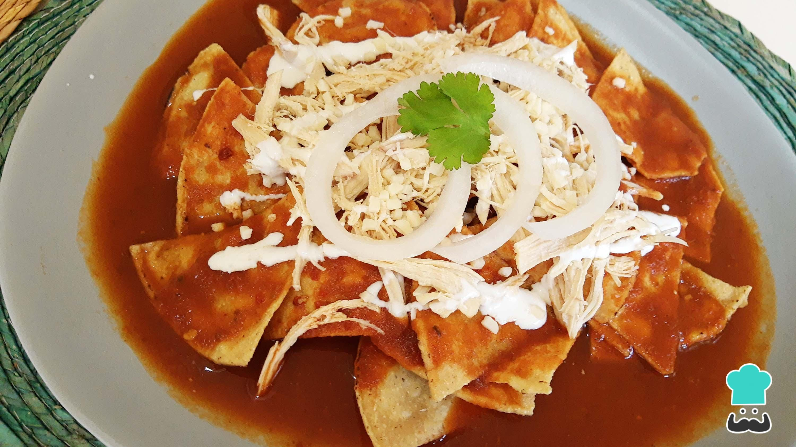

Chilaquiles rojos

Desayuno delicioso
Ingredientes
- 3 jitomates guaje
- 6 chiles guajillo
- 2 dientes de ajo
- 1/4 de cebolla
- 1 cucharada de aceite
- 2 ramas de epazote
- Sal
Preparacion
Salsa
- Hervir jitomates
- Licuar jitomates
- Poner en una cazuela con aceite y dejar hervir por 5 minutos
Chilaquiles
- 4 huevos
- Aceite
- Totopos
- Crema acida
- Queso fresco
- 1/2 de cebolla
- Frijoles fritos
Disfruta!